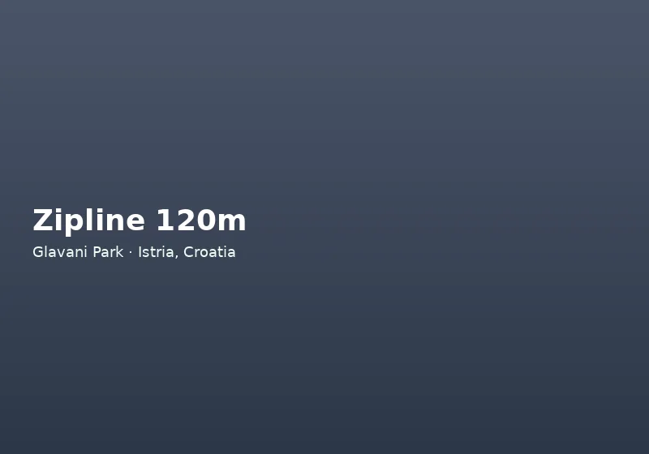

Pula kao baza za istraživanje Istre
Pula sidri južni vrh Istre s jednim od najprometnijih aerodroma u Hrvatskoj, dubokom rimskom baštinom i neposrednim pristupom Jadranu. Većina posjetitelja poznaje Arenu — amfiteatar iz prvog stoljeća koji i danas prima koncerte — i obalni Park prirode Kamenjak sa stjenovitim uvalama i borovim šetnicama. No boravak u Puli stavlja vas na dohvat unutrašnjih sela, vinskog kraja i najboljih avantura na otvorenom.
Kad ste obišli gradske znamenitosti i dane na plaži, a tražite nešto aktivno, Glavani Park spada među najbolje ocijenjene aktivnosti kod Pule bez cjelodnevne vožnje. Park leži trideset minuta u unutrašnjost na Glavani 10, 52207 Barban, na cesti između Barbana i Vodnjanja — dovoljno blizu za jutarnji izlet prije ručka u Puli, dovoljno duboko u šumi za osjećaj bijega.
Pula nudi bogat kalendar događanja — Filmski festival, Outlook festival na Fortici, lokalne fešte vinara — pa je planiranje „pulskog tjedna“ uključujući Glavani Park zahtijeva samo malo koordinacije. Aktivni putnici često biraju tri dana obale i jedan dan unutrašnjosti; park se prirodno uklapa u četvrti dan kada trebate promjenu ritma od ležaljki i ručaka uz more.
Obalne i kulturne atrakcije oko Pule
Prije odlaska u unutrašnjost, obalni vrhunci unutar dvadeset minuta uključuju Aquarium Pula u bivšoj tvrđavi — odličan za obitelji s malom djecom. Nacionalni park Brijuni — brodom iz Fažane — spaja arheologiju, safari životinje i kupanje. Kamenjak na Premanturi nudi mjesta za skok s litice (za iskusne plivače), biciklističke staze i kristalno more.
U gradu hram Augusta, Slavoluk Sergijevaca i venecijanska tvrđina nagrađuju nekoliko sati hodanja. Večeri pripadaju rivi i konobama s istarskim tjesteninama, plodovima mora i Malvazijom. Ta iskustva definiraju Pulu; Glavani Park ih nadopunjuje strukturiranom fizičkom avanturom umjesto da ih zamjenjuje.
Za goste bez automobila moguć je dogovor taksi usluge ili privatnog transfera iz Pule — navedite Glavani 10, Barban, jer lokalni vozači znaju lokaciju. Neki pulski hoteli u partnerskom programu nude letke ili QR kodove za brzu rezervaciju. Usporedba s drugim aktivnostima kod Pule — delfinari, buggy ture, jedrenje — pokazuje da park nudi jedinstvenu kombinaciju visine, brzine i timskog doživljaja u prirodi.
Glavani Park: avantura u unutrašnjosti
Na 1,5 hektara hrastove šume Glavani Park je jedan od najvećih namjenskih adrenalinskih parkova u Hrvatskoj. Atrakcije uključuju tri visoke staze (žuta 2 m, plava 6 m, crna 10 m), zipline 120 m, zipline 113 m na plavoj stazi, ljuljačku 12,5 m, ljudsku katapultu, Quick Jump 20 m i vanjski zid za penjanje. Instruktori na engleskom rade na svakoj stanici s CE certificiranim harnesima i kacigama.
Park odgovara obiteljima, parovima i grupama u pulskim hotelima, vilama ili kampovima koje žele pauzu od pijeska i razgledavanja. Većina provede tri do četiri sata. Besplatno parkiranje za automobile i veće vozilo. Radno vrijeme 9–17 h, posljednji ulaz 15 h — dođite prije podneva za više atrakcija.
Nazovite +385 91 896 4525 prije vožnje, posebno u srpnju i kolovozu kad individualni dolazak nije zajamčen bez najave.
Poslijepodnevni posjet parku omogućuje jutarnje kupanje na Kamenjaku ili obilazak amfiteatra bez žurbe, uz dolazak u park do 14 sati za solidan broj aktivnosti prije zatvaranja. Noćenje u Puli nakon adrenalinskog dana često uključuje opuštenu večeru u konobi — idealan balans za odmor u Istri.
Spajanje Pule i unutrašnje Istre u jedan dan
Popularan plan: rimska Pula ili plaža ujutro, Glavani Park rano poslijepodne (posljednji ulaz u 15 h). Ili cijelo jutro u parku, zatim Barban ili Vodnjan — oba su minuta vožnje od ulaza. Za duže rute dodajte degustaciju vina u središnjoj Istri ako prihvatite više vožnje.
Uže rasporede park sam ispunjava zadovoljavajućim poludnevnim doživljajem. Širi vodič što raditi u Istri pomaže u planiranju višednevnog putovanja.
Dolazak iz Pule u Glavani Park
Iz Pule krenite prema Labinu i skrenite u Manjadvorce prema Glavani. Nastavite lijevo lokalnom cestom 300 metara do ulaza. Navigacija i GPS (45°1′17″ N, 13°57′4″ E) jednostavni su za najam automobila. Nije potreban 4x4.
Javni prijevoz ograničen je; najam automobila ili organizirani izlet praktičan je izbor. Kod rezervacije taksi transfera navedite adresu Glavani 10, Barban. Detalje atrakcija potražite na zipline Hrvatska, obiteljske aktivnosti i avanturistički park prije putovanja.
Pula kao univerzitetski i industrijski grad ima i residentnu populaciju koja vikendom traži izlet u prirodu — Glavani Park odgovara i lokalnim obiteljima, ne samo turistima. Pulski stanari često imaju prednost fleksibilnog dolaska radnim danom kad su redovi kraći. Kombinacija amfiteatra, Glavani Parka i večere u Fažani ili Medulinu stvara „pulski vikend paket“ koji možete preporučiti prijateljima koji prvi put posjećuju Istru.
Glavani Park nadopunjuje tipičan „pulski“ odmor koji uključuje amfiteatar, riblji market i večernju šetnju uz luku. Aktivni putnici često traže upravo jedan dan bez povijesnih spomenika i jedan dan bez ležanja — park ispunjava taj zahtjev bez odlaska u drugi kraj Hrvatske. Povratna vožnja prema Puli u kasno poslijepodne omogućuje večeru u gradu uz pogled na more, što zaokružuje savršen dan izvan gužve na plaži.
Taxi i rideshare usluge iz Pule do Barbana dostupne su sezonski; dogovorite povratak unaprijed jer javni prijevoz ne pokriva Glavani direktno. Gosti iz Medulina i Premanture imaju sličnu udaljenost kao centar Pule — Glavani Park jednako je logičan izbor za cijeli južni rub Istre.